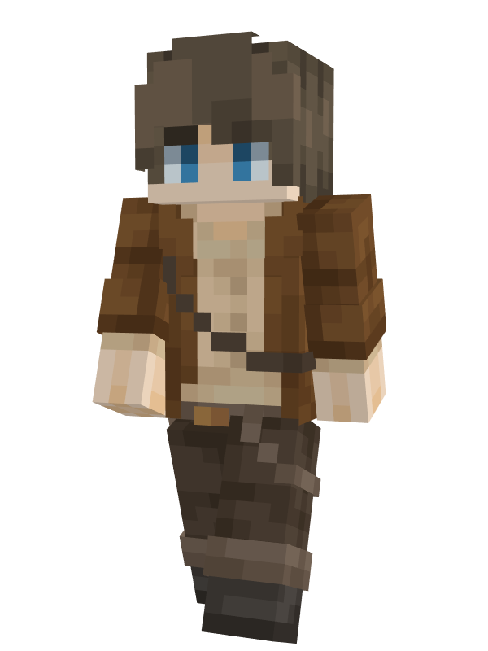
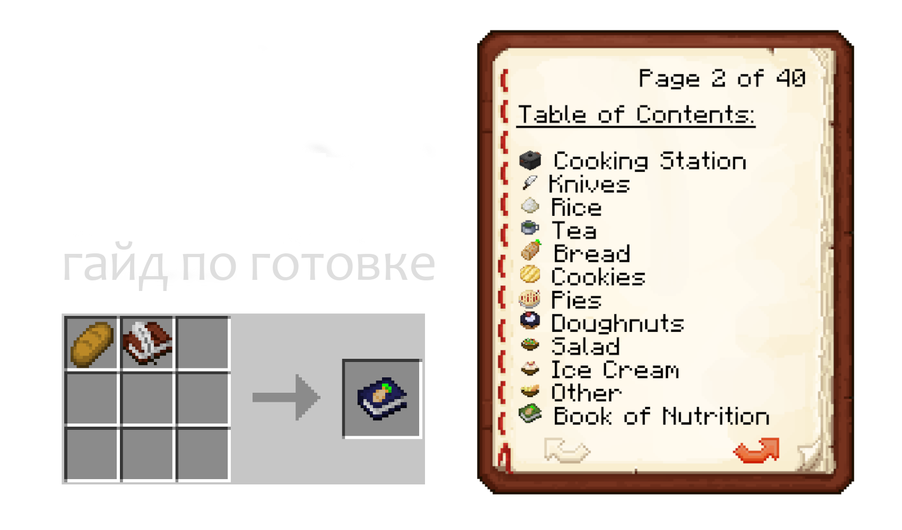
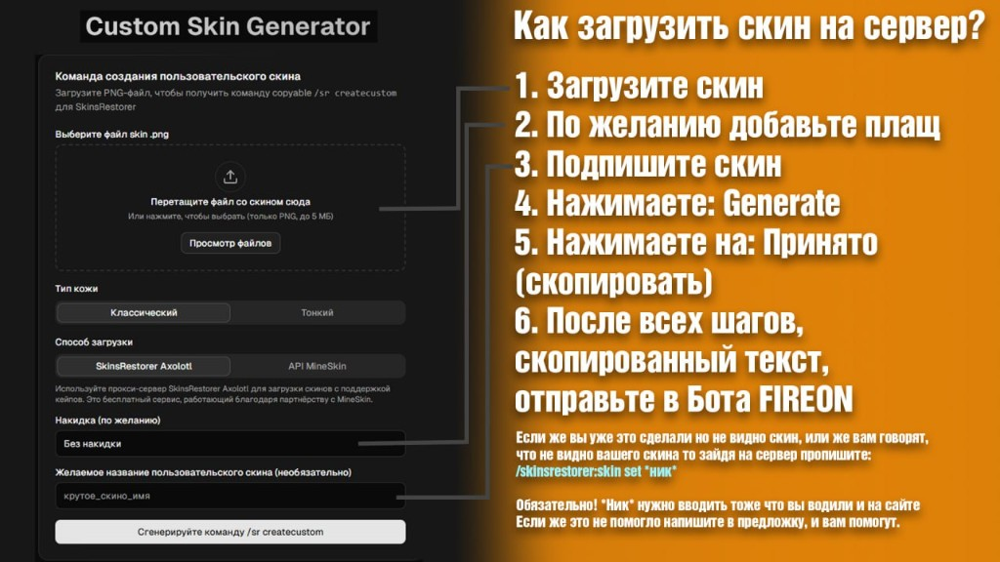

Происхождение

ПРАВИЛА СЕРВЕРА
По вашему запросу правил не найдено.
Запрещено:
Играйте честно и уважайте других игроков!
СТРИМЫ И СТАТУСЫ
На сервер добавлены оповещения о стримах. Чтобы получить эту возможность, отправьте в бота-предложку краткую анкету.
Пример заявки:
Ваш ник и ссылка на платформу, с которой вы ведёте трансляции (Твич / YouTube)
Особые статусы (цветные ники):
- Стример — фиолетовый ник
- Ютубер — красный ник
- Донатер — оранжевый ник
Донатеры учитываются с момента объявления: те, кто донатил до поста, цветной ник не получают.
Чтобы посмотреть активные трансляции на сервере, используйте команду /Live.
Заявки отправляйте в бота: @Fire0n_bot
ГОТОВКА

МЕХАНИКИ СЕРВЕРА
На сервере действует правило: если игрок находится в состоянии невидимости (способности происхождения, зелья, эффекты плагинов), его ник не указывается в сообщениях об убийствах и в ленте смертей.
Это сделано, чтобы невидимые игроки не раскрывались автоматически через килл-фид и статистику PvP.
Ночь на сервере можно пропустить с помощью плагина Skip Night.
Как пропустить ночь:
- Дождитесь наступления ночи (или дождя/грозы, если плагин это учитывает).
- Лягте спать в кровати — достаточно части игроков онлайн (порог задаётся на сервере).
- Когда нужное количество игроков заснёт, ночь автоматически сменится днём.
Если вы один на сервере — достаточно одной кровати. В группе может потребоваться заснуть нескольким игрокам.
Чтобы установить свой скин, используйте генератор SkinsRestorer и бота @Fire0n_bot.
Пошаговая инструкция:
- Откройте генератор: skinsrestorer.net/generator
- Загрузите файл скина в формате PNG (до 5 МБ).
- По желанию выберите плащ в выпадающем списке.
- Укажите желаемое название скина (латиница, без пробелов — например
cool_skin_name). - Выберите тип кожи: Классический или Тонкий (Slim).
- Нажмите «Сгенерировать команду /sr createcustom».
- Нажмите «Принято (скопировать)» и скопируйте готовую команду.
- Отправьте скопированный текст в @Fire0n_bot.

Если скин не отображается:
- На сервере выполните: /skinsrestorer:skin set ВАШ_НИК
- Ник в команде должен точно совпадать с ником, который вы указывали на сайте при создании скина.
Плагин Brewery добавляет варку напитков по рецептам. Варка состоит из трёх этапов: ферментация, дистилляция и выдержка (настаивание). Не для каждого напитка нужны все три — в рецепте указано, что именно требуется.
1. Ферментация
- Нужен котёл с водой и под ним источник тепла: открытое пламя (чтобы не гасло от дождя, можно зажечь на незерите), блок магмы, блок лавы или костёр.
- Котлы можно ставить вплотную друг к другу — главное, чтобы под каждым был свой нагрев.
- Возьмите в руку ингредиенты из рецепта и нажимайте по котлу ПКМ, чтобы засыпать их по очереди.
- В рецепте указано время ферментации. Отслеживать его удобно часами: ПКМ по котлу с часами в руке — в чате появится, сколько минут прошло с момента загрузки последнего ингредиента. С третьей минуты показывается точное время; в первые две минуты будет сообщение вроде «котёл только начал кипеть».
- Когда пройдёт нужное время, возьмите пустые стеклянные бутылки и нажмите ПКМ по котлу — жидкость перельётся в бутылки. Из полного котла за раз можно забрать до трёх бутылок напитка.
2. Дистилляция
- Некоторые напитки после ферментации нужно прогнать через обычную зельеварку.
- В слот ингредиента положите одну светокаменную пыль — её не нужно менять после каждого цикла, она работает постоянно.
- Загрузите в зельеварку бутылки с напитком и дождитесь нужного числа циклов дистилляции из рецепта. Процесс остановится сам, когда лимит достигнут — постоянно следить за таймером не обязательно.
- Если засунуть в зельеварку со светокаменной пылью напиток, который не предназначен для дистилляции, с каждым циклом он будет терять качество и в итоге превратится в мутный дистиллят.
3. Выдержка (настаивание в бочке)
- На FIREON 1 игровой «год» выдержки соответствует примерно 20 минутам реального времени (как на типичных настройках Brewery).
- Важны тип древесины бочки и её размер — в рецепте указано, в какой бочке настаивать напиток.
- Малая бочка плагина: 8 деревянных ступеней и табличка с текстом Barrel. При успешной сборке в чате появится сообщение о создании бочки (на английском — если на сервере без русификатора). Внутри 9 слотов под напитки; в остальные ячейки теоретически можно класть и другие предметы, если вам это зачем-то нужно.
- Большая бочка плагина: та же логика постройки, но больше слотов — обычно 27 под напитки и больше расход ресурсов.
- Обычная ванильная бочка Minecraft тоже подходит: для плагина она считается дубовой, независимо от вида дерева в крафте, и даёт 6 слотов под напитки. Остальные слоты свободны для прочих вещей — поэтому уже готовые напитки лучше хранить в сундуках, иначе в смешанном хранении они могут испортиться.
- Бочки Brewery можно ставить рядом друг с другом, но не прижимайте их вплотную к деревянным доскам и «стенам» из досок: бочка может потерять свойства, перестать открываться и выбросить содержимое в мир в неподходящий момент.
После варки: напиток пьётся с бутылки в руке (ПКМ). Сила опьянения и эффекты зависят от рецепта и качества. Справка по командам плагина (если включена): /brew help.
На сервере установлен мод/плагин Simple Voice Chat — голосовое общение по близости.
Что нужно сделать:
- Установите мод Simple Voice Chat для вашей версии Minecraft (Fabric или Forge — как на сервере).
- Запустите игру с модом и зайдите на сервер FIREON.
- При первом входе пройдите настройку микрофона в меню мода.
- Говорите в игре: по умолчанию используется клавиша V (зажать — говорить, отпустить — молчать). Клавишу можно сменить в настройках клавиш.
Как это работает:
- Слышны только игроки рядом — чем дальше, тем тише голос.
- Через стены звук приглушается.
- В настройках мода можно проверить уровень микрофона и выбрать устройство ввода.
Плагин EmoteCraft позволяет показывать эмоции и анимации персонажа.
Как пользоваться:
- Установите мод EmoteCraft на клиент (версия как у сервера).
- В игре откройте меню эмоций — обычно клавиша B или кнопка в колесе эмоций (смотрите «Управление» в настройках).
- Выберите эмоцию из списка — персонаж проиграет анимацию.
- Другие игроки с установленным модом увидят вашу эмоцию.
Некоторые эмоции можно остановить повторным нажатием или движением. В настройках EmoteCraft можно назначить свои клавиши для любимых эмоций.
На сервере можно добавлять свою музыку на пластинки через бота и команду в игре.
Как добавить трек:
- Подготовьте файл в формате MP3.
- Отправьте MP3-файл в @Fire0n_bot.
- Дождитесь, пока бот обработает файл — трек появится в списке доступной музыки.
- Зайдите на сервер и выполните: /cd create
- Выберите свою музыку из списка и создайте музыкальную пластинку.
- Вставьте пластинку в проигрыватель (jukebox) — трек начнёт играть в радиусе слышимости.
Дополнительные команды плагина могут включать просмотр своих дисков и удаление — уточняйте /cd help на сервере.